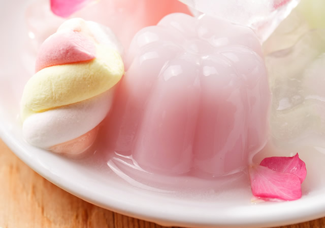

甜品食谱
Dessert Recipes

草莓玫瑰果冻
食材:
草莓果冻粉一盒，罗拔臣纯鱼胶粉一盒（50克），糖玫瑰花50克（可用香玫蜜钱、干玫瑰花代替），椰丝适量，糖适量，达能酸乳酪一盒（草莓或原味），冰淇淋，开水两碗，花型冰格（要耐高温100度以上）3、4个
做法:
- 1. 用开水一碗泡开糖玫瑰花（香槟玫瑰蜜饯做法相同，干玫瑰花苞时间长一些），可以用微波炉加热以便节省时间，待开水呈粉红色，捞起糖玫瑰花留用，加糖调味。
- 2. 用不锈钢容器盛糖玫瑰水，置于开水锅中加热，加入纯鱼胶粉4汤匙，搅融，取出待凉。
- 3. 用不锈钢容器开水一碗，置于开水锅中加热，加入草莓果冻粉一盒搅融，加入纯鱼胶粉2汤匙，搅融，取出待凉。
- 4. 糖玫瑰果冻水中可以加入椰丝或剪碎的糖玫瑰装饰。
- 5. 花型冰格用开水烫过，用茶匙装入果冻水，置于冰箱凝固。
- 6. 果冻凝固后，排入水晶杯，倒入酸乳酪 (或冰淇淋)，再排入果冻。
Made by Mao Jingnan, Beijing Foreign Studies University